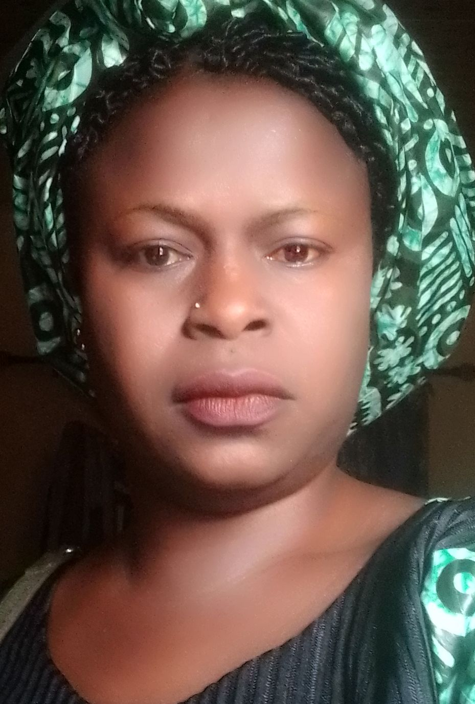
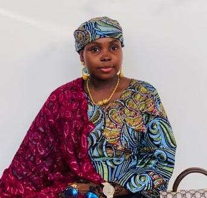
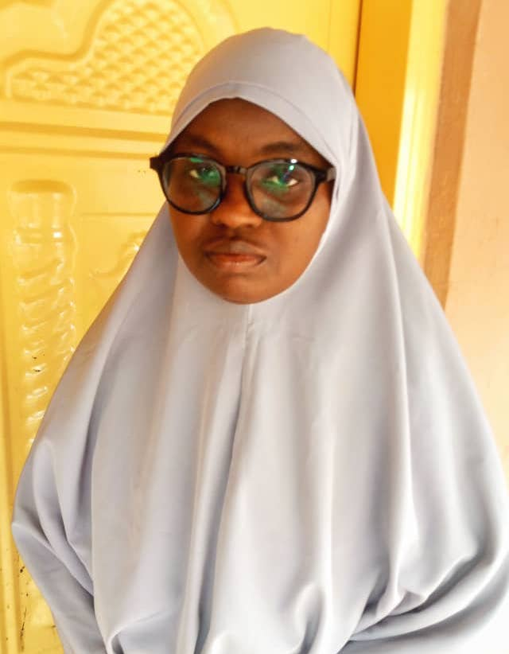
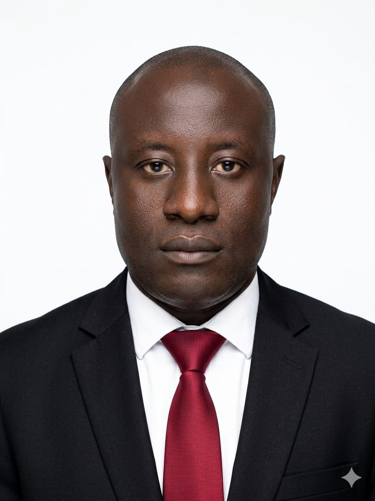
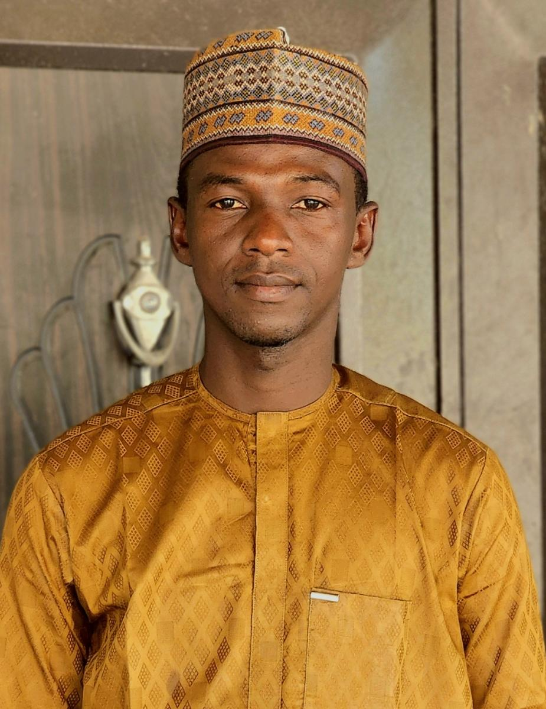
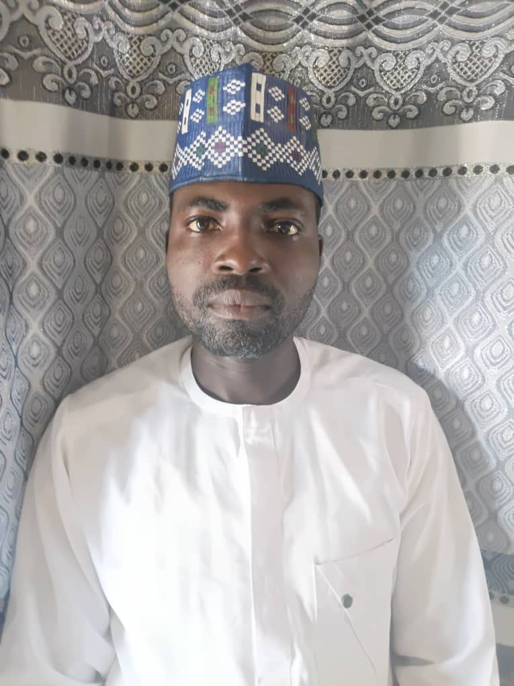

Serah Zamdai Hampel
Content Lead
Serah Zamdai Hampel is a 400-level student in the Department of Information Management Technology at Modibbo Adama University, Yola. She contributes to the team as a content lead.
ID Number: DL/IMT/23D/1037
Level: 400 Level
Programme: Information Management Technology
serahzamdai1@gmail.com
Mustapha Bala
Frontend Lead
Mustapha Bala attended Police Children's School, Yola, from 2002 to 2008 and General Murtala Mohammed College, Yola, from 2008 to 2014. He earned a diploma in Information Management Technology at MAUTECH between 2015 and 2017 and is now a 400-level direct-entry student in the department.
ID Number: DL/IMT/23D/0128
Level: 400 Level
Programme: Information Management Technology
mustybala1995@gmail.com

Aishatu Halilu Nyako
Content Lead
Aishatu Halilu Nyako completed her primary and secondary education at Chiroma Ahmad Academy, Yola, and earned a National Diploma in English Education from Adamawa State Polytechnic, Yola. She is currently pursuing her degree at Modibbo Adama University, where she also works as an Assistant Executive Officer (Administration).
ID Number: DL/IMT/21U/0108
Level: 400 Level
Programme: Degree
Department: Information Management Technology
Faculty: Social and Management Technology
Aishatuhalilunyako@gmail.com
+234 706 182 7477
Suleiman Abubakar
UI Designer
Suleiman Abubakar was born in 2001. He values peace, hard work, and good people, and remains focused on achieving his goals one step at a time.
ID Number: DL/IMT/21U/0117
Level: 400 Level
Programme: Degree
Department: Information Management Technology
Faculty: Social and Management Sciences
suleimanribadu2004@gmail.com

Ummul Kulchumi Bappa
Frontend Developer
Ummul Kulchumi Bappa was born and raised in Yola, Adamawa State. She attended Government Day Secondary School in Yola Town and is currently studying Information Management Technology at Modibbo Adama University, Yola.
ID Number: DL/IMT/23D/0130
Level: 400 Level
Programme: Information Management Technology
bappaummi@mau.edu.ng

Buhari Haruna Aliyu
Content Lead
Buhari Haruna Aliyu was born and raised in Jimeta, Adamawa State, and attended Federal Government College, Ganye. He is now a student of Information Management Technology at Modibbo Adama University, Yola.
ID Number: DL/IMT/23D/0164
Level: 400 Level
Programme: Information Management Technology
buharibtech2021@gmail.com

Ibrahim Aliyu
Team Member
Ibrahim Aliyu was born on 15 August 1998. He attended primary school in Old GRA from 2002 to 2008 and secondary school from 2009 to 2015. He continued his studies at Adamawa State Polytechnic from 2018 to 2020 before gaining admission to Modibbo Adama University in 2022, where he is currently a 400-level student.
ID Number: DL/IMT/21U/0078
Level: 400 Level
Programme: Degree
Department: Information Management Technology
Faculty: Social and Management Sciences
Ibrahimaliyu236@gmail.com

Auwalu Mohammed
Content Lead
Auwalu Mohammed was born in Damasak, Mobbar LGA, Borno State. He attended Cross Kauwa Primary School from 1995 to 2001 and Government Senior Science Secondary School, Monguno, from 2002 to 2008. He is now a student of Information Management and Technology at Modibbo Adama University, Yola.
ID Number: DL/IMT/23D/0162
Level: 400 Level
Programme: Degree
Department: Information Management and Technology
Faculty: Social Science
auwalmoham@gmail.com
+234 803 744 3544
Abigail Markus Biriya
UI/UX Designer
Abigail Markus Biriya was born and raised in Hong Local Government Area of Adamawa State. She obtained her primary school certificate from Kwarhi B Primary School, Hong, and later earned a National Diploma from Federal Polytechnic Mubi.
ID Number: DL/IMT/23D/0150
Level: 400 Level
Programme: Information Technology Management
abigailmarkbiriya@gmail.com